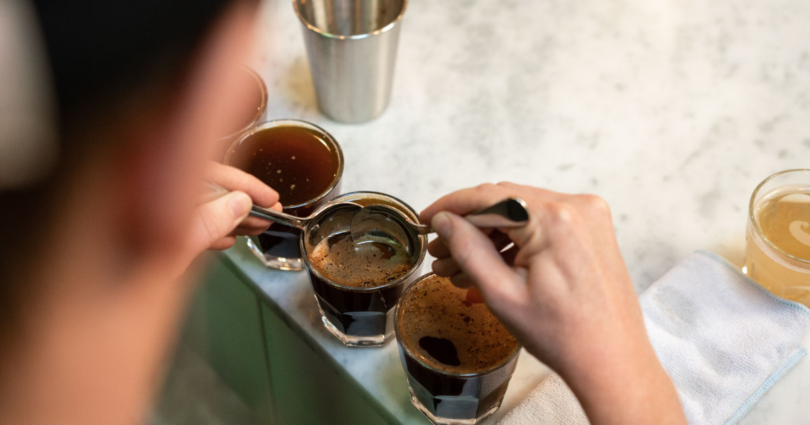
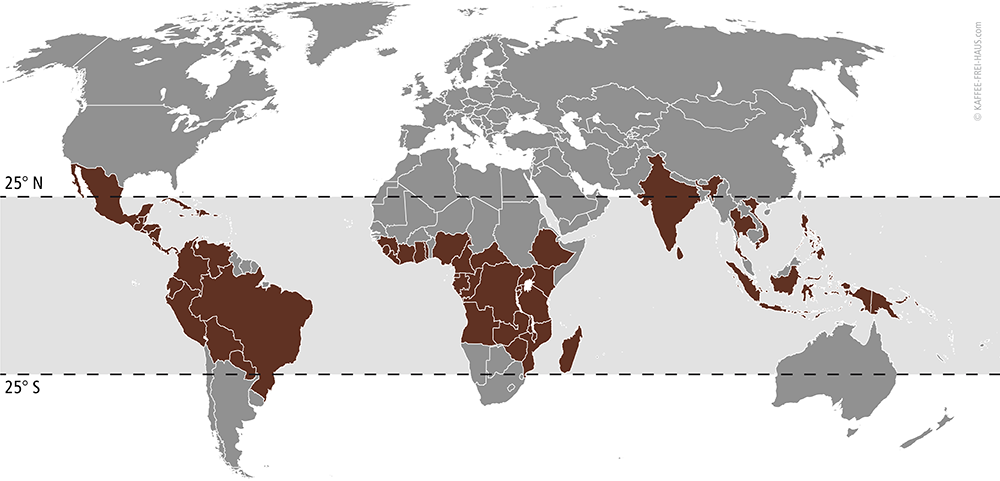
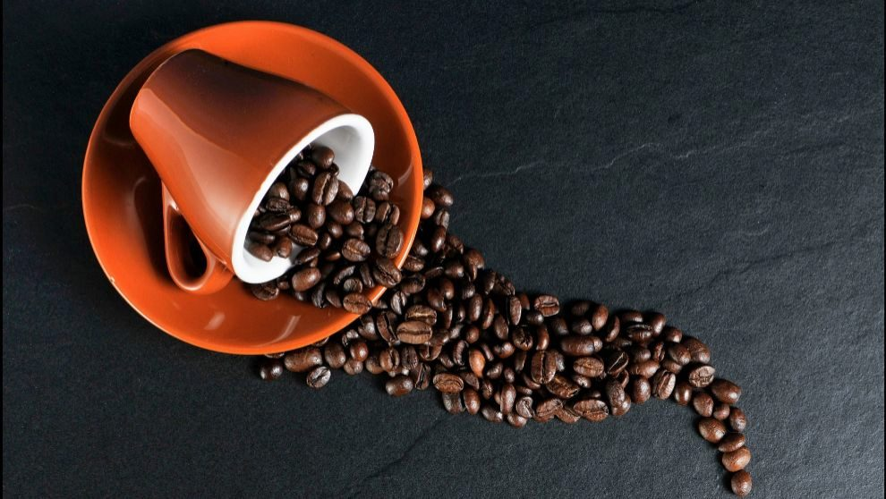
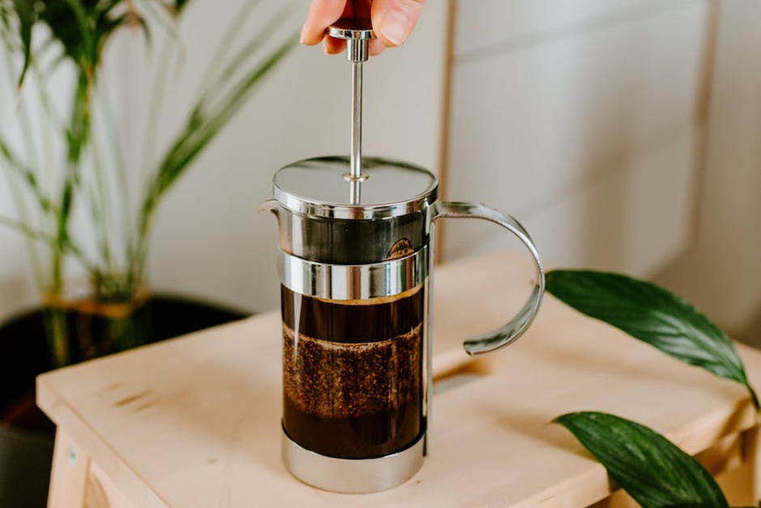

Cultura de Café
Todo lo que necesitas saber para ser un experto del café
Como hacer una cata de café

Conocé los pasos para aventurarte en las catas de café y mejorar tu paladar.
Regiones de cultivo del café

Conocé las distintas regiones de cultivo y sus caracteristicas
Enemigos del café

Conocé los enemigos naturales del café para aprender a conservarlo mas tiempo en buenas condiciones
¿Cual es la mejor cafetera?

¿Queres tomar un buen café y sentir a flor de piel sus notas? Te recomendamos la mejor cafetera